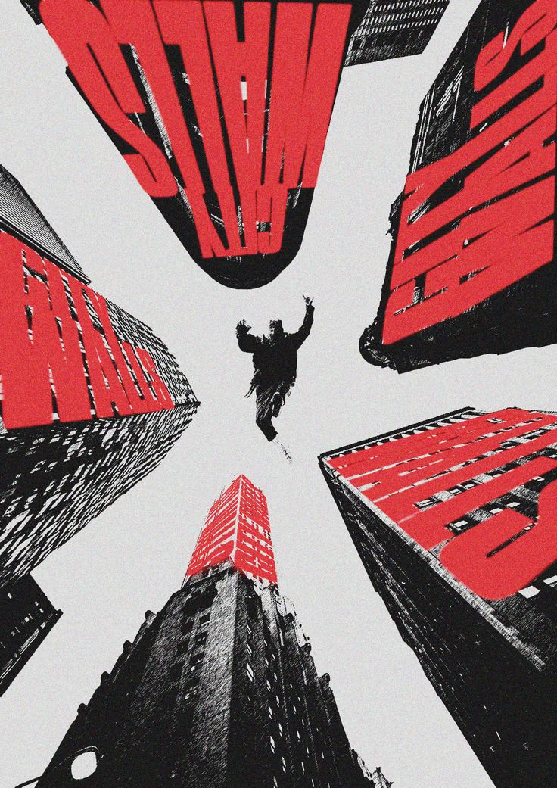

Historia
Twenty One Pilots es un dúo estadounidense formado en 2009 en Columbus, Ohio. Su música mezcla pop, rock alternativo, hip hop y electrónica, con letras que tratan temas como la salud mental, la fe y la identidad.
Integrantes
- Tyler Joseph: voz, piano, ukelele y bajo.
- Josh Dun: batería y percusión.
Discografía
| Año | Álbum |
|---|---|
| 2009 | Twenty One Pilots |
| 2011 | Regional at Best |
| 2013 | Vessel |
| 2015 | Blurryface |
| 2018 | Trench |
| 2021 | Scaled and Icy |
| 2024 | Clancy |
Canciones destacadas
- Stressed Out
- Ride
- Heathens
- Car Radio
Galería